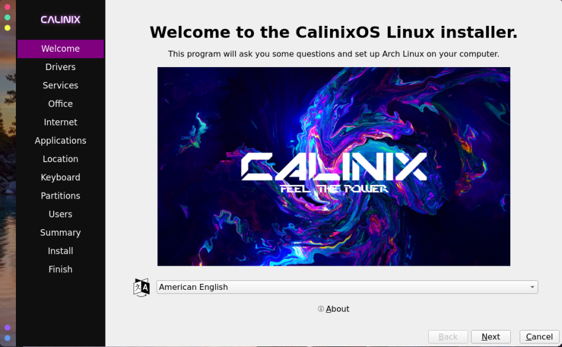

CalinixOS Alpha 5 features many changes that make it a great distribution. Modernization is prime in today's world, hence we provide a ready-to-go modern interface with modern tools
Install It Easy!
Unlike Arch, installing Calinix does not need so much time and experience, and really, its a simplistic interface. Calamares is a featurefilled, fast and easy-to-use installer which makes installing linux a lot easier!
Beauty and the Beast
With the wonderful taste of California, CalinixOS comes with a beautiful, sparkling, attractive interface similar to the MacOS X, and with that level of beauty, ofcourse, comes a beast OS, which goes to any boundaries to fulfill your needs! One stop destination to your distro hopping!
Btrfs is there, but not limited to it!
Our default filesystem is Btrfs (Better File System) which is a modern, stable, performance-centric
Copy on Write file system. The Btrfs can take snapshots of the file system. If you take a snapshot
before trying out anything risky, when things do not go as planned, you can go back to an early state
where everything worked. Check out a comparison between btrfs and ext4 here
Window Manager interface
Calinix ships with the awesome window manager, which is truly awesome by its name. Configurable to ANY
EXTENT. But the default config is such that you dont want to leave it. But still you have full freedom
on your machine and the taste of window manager and its productivity boosts. Calinix stands as an
awesome introduction to window managers for the starter user.

Wallpapers that refresh your day!
CalinixOS ships with Iris wallpaper manager, a custom CLI for providing beautiful wallpapers from Unsplash straight to your desktop! Like our every tool, iris is completely lightweight and FOSS. It's recorded to consume only 10 megabytes of RAM max.

Rolling Release
CalinixOS is a rolling release distro based on Arch Linux, which ensures always getting the latest software updates. It allows you to stay on the edge with only one extra repository outside arch, and makes it very close to Vanilla Arch without the hassle behind it!